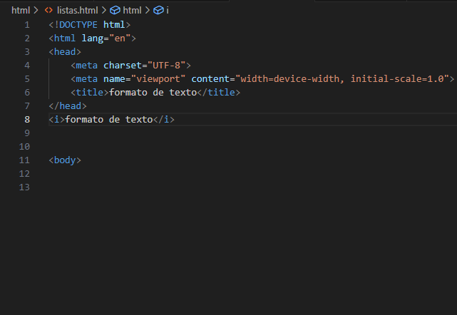

|
<b> </b>
la etiqueta <b> en HTML se usa para hacer que el texto dentro de ella aparezca en negrita en la página web. Simplemente cambia el estilo del texto para que se vea más grueso. |
<strong> </strong>
en HTML se usa para dar importancia semántica al texto, indicando que su contenido es de mayor relevancia o énfasis en comparación con el texto circundante. |
||||
|---|---|---|---|---|---|
|  |
<i></i>La etiqueta <i> en HTML se usa para dar énfasis o resaltar texto, indicando que debe ser mostrado en cursiva por la mayoría de los n avegadores web. |
<em></em>la etiqueta <em> en HTML se utiliza para enfatizar o resaltar texto, indicando que ese contenido tiene un énfasis especial. Este énfasis suele representarse visualmente en cursiva por los navegadores, aunque la apariencia exacta puede variar dependiendo de los estilos predeterminados o las reglas de estilo aplicadas. |
|||
<mark></mark>La etiqueta <mark> en HTML se utiliza para resaltar o marcar parte del texto, indicando que esa sección tiene relevancia o importancia dentro del contexto en el que se encuentra. Este elemento es usado para resaltar o destacar visualmente el contenido. |
<small></small>La etiqueta <small> en HTML se utiliza para reducir el tamaño del texto, indicando que el contenido marcado con esta etiqueta debería mostrarse en un tamaño más pequeño que el texto circundante. |
||||
<del></del>La etiqueta <del> en HTML se usa para marcar texto que ha sido eliminado o borrado de manera intencional. Esta etiqueta es útil, por ejemplo, en documentos colaborativos o páginas web donde se necesita mostrar lo que se ha eliminado en una revisión o actualización. |
<ins><ins>La etiqueta <ins> en HTML se utiliza para marcar el texto que ha sido insertado o añadido en un documento, destacando las adiciones o cambios realizados. Es especialmente útil en colaboraciones o revisiones donde se desea mostrar claramente qué partes del texto son nuevas o han sido agregadas. |
||||
<sub></sub>La etiqueta <sub> en HTML se utiliza para mostrar texto como subíndice, es decir, para representar texto que debe mostrarse en una posición más baja y más pequeña que el texto normal, a menudo utilizado para fórmulas químicas, expresiones matemáticas, fechas y notas al pie. |
<sup><sup>La etiqueta <sup> en HTML se utiliza para mostrar texto como superíndice, es decir, para representar texto que debe mostrarse en una posición más alta y más pequeña que el texto normal. Se utiliza comúnmente para exponentes, indicadores numéricos y notas a pie de página. |